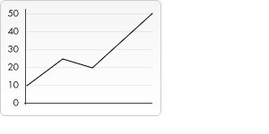

На холсте можно в совершенстве нарисовать любую желаемую графику, от набора линий или простых геометрических фигур до портрета со всеми мельчайшими подробностями. Но с повышением уровня сложности графики повышается уровень сложности кода. В высшей степени маловероятно, что можно было бы написать самостоятельно весь код, требуемый для создания высококачественного изображения. К счастью, у разработчиков есть другие варианты, кроме как писать весь код самостоятельно. Возможности контекста рисования не ограничиваются рисованием простых прямых и кривых линий, также существуют методы для вставки готовых изображений, текста, узоров и даже рамок для показа видео.
Пример стилизированной анимации изображения сделанной с помощью canvas.
Контекст рендеринга canvas предоставляет два метода для рисования текста:
fillText(text, x, y [, maxWidth]) - Вставляет заданный текст в положении (x,y). Опционально может быть указана максимальная ширина.strokeText(text, x, y [, maxWidth]) - Вставляет контур заданного текста в положении (x,y). Опционально может быть указана максимальная ширина.Пример fillText
Текст вставлен с использованием текущего fillStyle.
function draw() {
var ctx = document.getElementById('canvas').getContext('2d');
ctx.font = "48px serif";
ctx.fillText("Hello world", 10, 50);
}
Пример strokeText
function draw() {
var ctx = document.getElementById('canvas').getContext('2d');
ctx.font = "48px serif";
ctx.strokeText("Hello world", 10, 50);
}
В примерах выше уже использовали свойство font для изменения размера текста. Кроме него существуют еще несколько свойств, позволяющие настроить вывод текста на canvas:
font = value - Это основной стиль, который будет использоваться для вывода текста. Строка имеет такой же синтаксис, как CSS-свойство font. По умолчанию - sans-serif высотой 10px.textAlign = value - Настройка выравнивания текста. Возможные значения: start, end, left, right или center. По умолчанию - start.textBaseline = value - Настройка выравнивания текста по вертикали. Возможные значения: top, hanging, middle, alphabetic, ideographic, bottom. По умолчанию - alphabetic.direction = value - Направление текста. Возможные значения: ltr, rtl, inherit. По умолчанию - inherit.Пример textBaseline
ctx.font = "48px serif";
ctx.textBaseline = "hanging";
ctx.strokeText("Hello world!", 0, 100);
Для измерения ширины текста (без рисования его на canvas) можно воспользоваться следующим методом:
measureText() - Возвращает объект TextMetrics, содержащий ширину текста в пикселах, до отрисовки на canvas.
Пример ниже показывает, как можно измерить ширину текста.
var ctx = document.getElementById('canvas').getContext('2d');
var text = ctx.measureText("foo"); // TextMetrics object
text.width; // 16;
Использование теней включает в себя только четыре свойства:
shadowOffsetX = float - Определяет горизонтальное расстояние, на которое тень должна простираться от объекта. На это значение матрица преобразования не влияет. По умолчанию оно равно 0. shadowOffsetY = float - Определяет вертикальное расстояние, на которое тень должна простираться от объекта. На это значение матрица преобразования не влияет. По умолчанию оно равно 0. shadowBlur = float - Определяет размер эффекта размытия; это значение не соответствует количеству пикселей и не зависит от текущей матрицы преобразования. Значение по умолчанию равно 0. shadowColor = color - Стандартное значение цвета CSS, указывающее на цвет эффекта тени; по умолчанию - полностью прозрачный черный. Свойства shadowOffsetX и shadowOffsetY определяют как далеко тень должна простираться от объекта в направлениях X и Y; на эти значения не влияет текущая матрица преобразования. Используйте отрицательные значения, чтобы заставить тень сместиться вверх или влево, а положительные значения, чтобы заставить тень сместиться вниз или вправо. По умолчанию оба значения равны 0.
Свойство shadowBlur определяет размер эффекта размытия; это значение не соответствует количеству пикселей и не зависит от текущей матрицы преобразования. Значение по умолчанию равно 0.
Свойство shadowColor - это стандартное значение цвета CSS, определяющее цвет эффекта тени; по умолчанию - полностью прозрачный черный.
Пример текста с тенью:
var ctx = document.getElementById('canvas').getContext('2d');
ctx.shadowOffsetX = 2;
ctx.shadowOffsetY = 2;
ctx.shadowBlur = 2;
ctx.shadowColor = "rgba(0, 0, 0, 0.5)";
ctx.font = "20px Times New Roman";
ctx.fillStyle = "Black";
ctx.fillText("Sample String", 5, 30);
Правила заполнения холста
При использовании fill (или clip и isPointinPath) можно дополнительно предусмотреть алгоритм правила заливки, по которому будет определяться, находится ли точка внутри или снаружи пути и, таким образом, будет ли она заполнена или нет. Это полезно в тех случаях, когда путь пересекается или вложен.
Возможны два значения:
nonzero" - Правило ненулевого индекса, которое является правилом по умолчанию.evenodd" - Правило четный-нечетный.В этом примере используем правило четный-нечетный.
ctx.beginPath();
ctx.arc(50, 50, 30, 0, Math.PI*2, true);
ctx.arc(50, 50, 15, 0, Math.PI*2, true);
ctx.fill("evenodd");
До сих пор создавали наши собственные фигуры и применяли стили к ним. Одна из самых впечатляющих функций <canvas> это возможность использования изображений. Они могут быть использованы для динамического композитинга фото или как фоны графиков, для спрайтов в играх, и так далее. Внешние изображения могут быть использованы в любых поддерживаемых браузером форматах, таких как PNG, GIF, или JPEG. Вы можете даже использовать изображение, произведенное другими canvas элементами на той же странице как источник!
Импортирование изображений в canvas в основном состоит из 2 этапов:
HTMLImageElement объект или для другого canvas элемента как источник. Также можно использовать изображение дав ссылку на URL.canvas используется функция drawImage().Canvas API может использовать все перечисленные далее типы данных как источник изображения:
HTMLImageElement - Эти изображения созданы, используя конструктор Image(), также как все <img> элементы.HTMLVideoElement - Используя HTML <video> элемент как источник изображения захватывает текущий кадр из видео и использует его как изображение.HTMLCanvasElement - Вы можете использовать другой <canvas> элемент как источник изображения.Эти источники совместно именуемые по типу CanvasImageSource.
Есть несколько способов, чтобы получить изображения для использования на холсте.
Использование изображений из той же страницы
Можно получить ссылку на изображение, на той же странице, на canvas с используя один из способов:
document.images коллекцияThe document.getElementsByTagName() методid конкретного изображения, который вы хотите использовать, вы можете использовать document.getElementById (), чтобы получить это конкретное изображениеИспользование изображений из других доменов
Использование crossorigin атрибута <img> элемент (отображается HTMLImageElement.crossOrigin свойства), вы можете запросить разрешение на загрузку другого домена для использования в drawImage(). Если хостинг домен разрешает доступ к междоменному изображению, то изображение может быть использовано в вашем canvas без without tainting it;иначе он может испортить ваш canvas.
Использование других canvas элементов
Как и с обычными изображениями, можем получить доступ к другим canvas элементам используя либо document.getElementsByTagName() либо document.getElementById() метод. Проверьте, что в canvas источнике уже что-то нарисовано, прежде чем использовать его в целевом изображении canvas.
Одним из удобных способов было бы использование второго элемента canvas в качестве миниатюры другого большего изображения canvas.
Создание изображений с нуля
Другой способ это создать новые HTMLImageElement объекты в нашем скрипте. Чтобы это сделать, вы можете использовать удобный Image() конструктор:
var img = new Image(); // Создает новый элемент изображения
img.src = 'myImage.png'; // Устанавливает путь
Когда этот скрипт выполнится, изображение начнет загружаться.
Если вы попытаетесь вызвать функцию drawImage() перед тем как изображение загрузится, то скрипт ничего не сделает (или, в старых браузерах, может даже выдать исключение). Поэтому вам необходимо использовать событие load, чтобы вы не пытались сделать это прежде, чем изображение загрузится:
var img = new Image(); // Создает новое изображение
img.addEventListener("load", function() {
// здесь выполняет drawImage функцию
}, false);
img.src = 'myImage.png'; // Устанавливает источник файла
Вложение изображения с помощью данных: URL
Другой возможный способ включить изображение это через data: url. Data URLs позволяет вам полностью определить изображение как Base64 кодированную строку символов прямо в ваш код.
var img = new Image(); // Создает новый элемент img
img.src = 'data:image/gif;base64,R0lGODlhCwALAIAAAAAA3pn/ZiH5BAEAAAEALAAAAAALAAsAAAIUhA+hkcuO4lmNVindo7qyrIXiGBYAOw==';
Одним из преимуществ data URLs это то что полученное изображение доступно сразу без других запросов туда-обратно на сервер. Другое потенциальное преимущество в том, что также можно инкапсулировать всё в одном файле все ваши CSS, JavaScript, HTML, и изображения, что делает его более портативным в других местах.
Некоторые недостатки этого метода в том что ваше изображение не кешировано, и для изображений с большим размером кодированние url может стать очень долгим процессом.
Использование кадров из видео
Вы также можете использовать кадры из видео представленных <video> элементом (даже если видео не видно). Например, если у вас есть <video> элемент с ID "myvideo", вы можете сделать:
function getMyVideo() {
var canvas = document.getElementById('canvas');
if (canvas.getContext) {
var ctx = canvas.getContext('2d');
return document.getElementById('myvideo');
}
}
Эта функция вернет HTMLVideoElement объект для этого видео, который, является одним из объектов, который можно использовать как CanvasImageSource.
Как только получили ссылку на источник объекта изображения, можем использовать метод drawImage() для включения его в canvas. Как увидим далее, метод drawImage() перегружен и у него есть несколько вариантов. В базовом варианте он выглядит как:
drawImage(image, x, y) - Рисует изображение, указанное в CanvasImageSource в координатах (x, y).
Простой линейный график
В следующем примере будем использовать внешнее изображение в качестве фона для небольшого линейного графика. Использование фонов может сделать ваш скрипт значительно меньше, потому что можем избежать необходимости писать код для создания фона. В этом примере используем только один образ, поэтому я использую обработчик событий изображения объекта загрузки для выполнения операторов рисования. drawImage() метод определяющий место фона с координатами (0, 0), которые привязаны к верхнему левому углу canvas.
function draw() {
var ctx = document.getElementById('canvas').getContext('2d');
var img = new Image();
img.onload = function(){
ctx.drawImage(img,0,0);
ctx.beginPath();
ctx.moveTo(30,96);
ctx.lineTo(70,66);
ctx.lineTo(103,76);
ctx.lineTo(170,15);
ctx.stroke();
};
img.src = 'https://mdn.mozillademos.org/files/5395/backdrop.png';
}
Получившийся график выглядит так:
Второй вариант метода drawImage() добавляет два новых параметра и позволяет разместить изображение в canvas с измененными размерами.
drawImage(image, x, y, width, height) - Это добавляет параметр ширины и высоты, которые указывают до какого размера нужно изменить изображение при рисовании его в canvas.
Тайлинг изображения
В этом примере будем использовать изображение в качестве обоев и повторим его в canvas несколько раз. Это может быть сделано просто через цикл, располагая измененные изображения на разных позициях. В коде внизу, первый цикл for проходит по рядам. Второй цикл for проходит по колонкам. Изображение уменьшено на треть от реального размера, которое было 50x38 пикселей.
Изображения могут стать размытыми, при большом увеличении или зернистыми при значительном уменьшении. Возможно, лучше всего не изменять размеры изображения, если на них есть текст, который должен остаться читаемым.
function draw() {
var ctx = document.getElementById('canvas').getContext('2d');
var img = new Image();
img.onload = function(){
for (var i=0;i<4;i++){
for (var j=0;j<3;j++){
ctx.drawImage(img,j*50,i*38,50,38);
}
}
};
img.src = 'A.png';
}
Получившийся рисунок canvas выглядит так:
У третьего и последнего варианта метода drawImage() в дополнении к источнику изображения есть еще восемь параметров . Он позволяет нам вырезать кусок из изображения, затем изменить его размер и нарисовать его в canvas.
drawImage(image, sx, sy, sWidth, sHeight, dx, dy, dWidth, dHeight) - В данном изображении, эта функция берет фрагмент из изображения, в виде прямоугольника, левый верхний угол которого - (sx, sy), ширина и высота - sWidth и sHeight и рисует в canvas, располагая его в точке (dx, dy) и изменяя его размер на указанные величины в dWidth и dHeight.
Чтобы понять что делает нарезка, можно посмотреть на изображение внизу. Первые четыре параметра определяют местоположение и размер фрагмента исходного изображения. Последние четыре параметра определяют прямоугольник, в который будет вписано изображение на целевом рисунке canvas.

Нарезка может быть полезным инструментом, когда вы захотите сделать композицию. Вы могли бы собрать все элементы в одном файле изображения и использовать этот метод для создания композиции. Например, если вы захотите сделать график, вы могли бы сделать PNG изображение, содержащее все необходимые тексты в одном файле и в зависимости от ваших данных, могли бы достаточно просто изменять график. Другим преимуществом является то, что нет необходимости загружать каждое изображение по отдельности, получив возможность увеличить скорость загрузки.
Обрамление изображения
В этом примере будем рамку. Изображение рамки это 24-х битный PNG, который включает падающую тень. Так как в 24-х битные PNG изображения включается полный 8-ми битный альфа-канал, в отличие от GIF и 8-битных PNG изображений, он может быть помещен в любой фон, без беспокойства о матовом цвете.
function draw() {
var canvas = document.getElementById('canvas');
var ctx = canvas.getContext('2d');
// Рисуем фрагмент
ctx.drawImage(document.getElementById('source'),
33, 71, 104, 124, 21, 20, 87, 104);
// Рисуем рамку
ctx.drawImage(document.getElementById('frame'),0,0);
}
В этот раз применили другой способ загрузки изображения. Вместо загрузки методом создания новых HTMLImageElement объектов, включили их как <img> тэги прямо в наш HTML файл и из них выбрали изображения. Изображения скрыты с помощью CSS свойства display, установленного в "none" для этих изображений.
Каждому <img> присвоен атрибут ID, который делает удобным их выбор с использованием document.getElementById(). Потом просто используем функцию drawImage(), чтобы из первого изображения вырезать фрагмент носорога и вставить его в canvas, затем рисуем рамку сверху, используя второй вызов функции drawImage().
Контроль изменений размеров изображения
Как было отмечено ранее, изменение размеров изображений может привести к размытости или к шуму в процессе преобразования. Вы можете использовать контекст рисования imageSmoothingEnabled свойства, чтобы контролировать использование сглаживающего алгоритма, когда изменяющиеся изображения в вашем контексте. Обычно это свойство установлено в true, означая, что изображения будут сглажены во время изменения размеров. Вы можете отключить это свойство так:
ctx.mozImageSmoothingEnabled = false;
ctx.webkitImageSmoothingEnabled = false;
ctx.msImageSmoothingEnabled = false;
ctx.imageSmoothingEnabled = false;
Цель работы: Изучение модифицирования текста на полотне, работа с изображениями.
Задание №1:
Создайте галерею изображений, с помощью canvas сделайте:
Задание №2:
Придумайте статистику для вашей галереи (например, посещаемости), по этой статистике с помощью canvas сделайте:
Задание №3:
canvas, цвет которого будет изменяться в зависимости от местоположения курсора в пределах элемента.